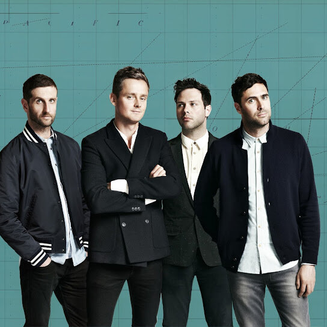
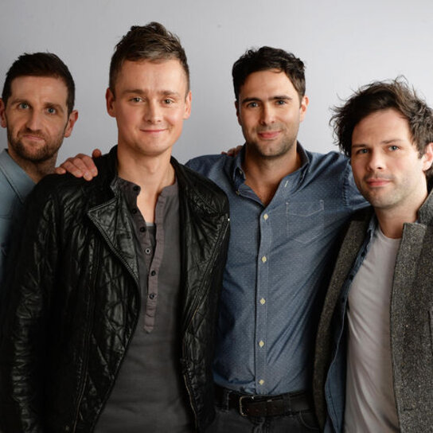
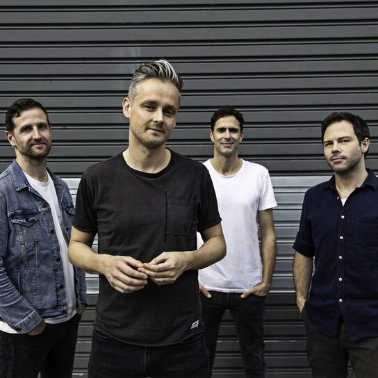

.jpg)
Keane is a beloved English rock band originating from Battle, East Sussex comprised of Tim Rice-Oxley (composer and pianist), Tom Chaplin (lead vocals), Richard Hughes (drummer) and Jesse Quin (bassist). Their new album, Cause and Effect, is out now on Island
By 2013, Keane had released four full length LPs all reaching number 1 in the UK album charts and sold 12 million albums worldwide. Hopes and Fears, their debut, had entered the list of the 40 best-selling albums in the UK of all time, and they had toured more than 40 countries. After 15 years, and having been friends since childhood, the band were just about ready to call it a day and in 2013 they bowed out with a show in Berlin that felt like an ending - and then everything went quiet on the Keane front.
The birth of this new album came as something of a surprise even to the band. During their time apart, Singer Tom Chaplin had released two successful solo albums. Meanwhile Tim, going through his own personal struggles, found he had written an album’s worth of incredibly personal songs fuelled by humour as well as pain. When Tom, bassist Jesse Quin and drummer Richard Hughes heard the songs, they were immediately drawn to them both sonically and lyrically. From there, the band found themselves back in the studio doing what they love, bringing these songs to life and reconnecting to each other.
As Tim Rice-Oxley says, "We’ve got a lot of great music in us.” ‘Cause and Effect’ is just that.